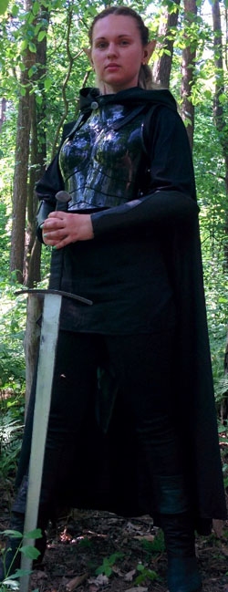

Личная страница Цириллы
Статус: Драар
Любимое оружие:
Eagle Longbow
История Цириллы
Мое имя Цирилла Мелендар, я родом из второго правящего дома Мензоберранзана, ныне не существующего, и, как принято полагать, никогда не существовавшего. Я хочу поведать вам свою историю.
Я была уже шестым ребенком верховной матери и четвертой дочерью дома Мелендар. Верховная мать была уже стара, и рождение дочери было для нее великой радостью.
По правилам нашей семьи, первые годы меня обучала сестра Дивзаридил, старшая дочь верховной матери, умная и рассудительная жрица Лосс. Она любила меня, насколько это было возможно в нашем сдержанном обществе. Мне было непросто слушать хвалебные рассказы сестры о великой богини Лосс и ее кровавом культе, но я сразу поняла, что главной задачей будет подстроиться к законам дровского общества и жить, несмотря ни на что.
Дивзаридил была отличным бойцом, но лучше всего она владела искусством стрельбы из лука, чему обучила и меня. «Умение себя защитить– достаточно ценный навык для того, кто хочет жить», – эти слова стали главным мотивом для постижения всех возможных навыков защиты и нападения. Не могу похвастаться особой чистотой помыслов и безумно доброй душой, ибо подобного примера в моем окружении не было, но превыше всего я ценила свою семью. Мне было неважно, насколько злы их души,ведь все равно они были родными. Единственным моим отличием от сестер было отсутствие интереса к власти и продвижению по ступеням в семейной иерархии, хотя причина была далеко не в бескорыстности. Я все еще была верна старшей сестре, которая должна в будущем стать верховной матерью нашего дома.
К двадцати годам обучение дома было закончено, и мой путь лежал в Академию.
Магия давалась мне легко. Главное - не перепутать слова в заклинаниях, ведь так можно вместо огненной вспышки вызвать огненного демона с нижних уровней. Верховная Мать определила для меня именно путь магии, так как моя натура казалась ей слишком мягкой для того, чтоб стать истинной жрицей.
Ко дню рождения мне преподнесли странный подарок. В церемониальном зале горел свет, слишком яркий для глаз дроу. Мои сестры сидели по правую сторону от матери, а в центре зала стояло кресло. На него мне и указала верховная мать. Как только я села в него, то потеряла сознание. Очнувшись через несколько суток, я увидела, что мое тело покрыто странными узорами, похожими на ритуальные рисунки на руках Верховной Матери и сестер. Раньше об их назначении умалчивали, но теперь пришла пора открыть эту семейную тайну. Они предупреждали своего носителя о возможной опасности, а также оберегали его. Как по мне, белые полосы на черной коже - сомнительное украшение, но потом я не раз мысленно благодарила за них.
Через неделю я уехала в Академию постигать глубины магии, дабы быть полезной своей семье. Настал конец счастливой и беззаботной жизни. Меня сторонились, так как мой Дом был слишком влиятельным, и никто не хотел нажить себе такого врага. Мне же были неинтересны другие дроу, их глупые разговоры о власти и способах, как заполучить больше любви Лосс. На время учебы я с головой окунулась в изучение магии, но мысли о доме не покидали меня. Ибо власть не нужна, если ее не с кем разделить.
Оставался всего один год обучения, а потом я собиралась вернуться в маленький злобный мирок семьи. Но тут случилась беда: Дивзаридил неожиданно умерла. Как говорили остальные сестры, она в один день просто не проснулась. Но я догадывалась, что без участия сестричек Аркен и Белноз дело не обошлось. В такие минуты горечь в душе ослепляет, а ненависть придает особый смысл жизни.
Когда я вернулась, желание отомстить окрепло. Смерть Аркен и Белноз стала той мыслью, с которой я засыпала и просыпалась. Практически сразу стало понятно, что не одной мне известна истинная причина неожиданной кончины сестры. Дивзаридил была любимицей Лосс, поэтому гнев богини был только вопросом времени. Не в силах больше подчиняться ужасным законам дровского общества, я бежала из дома в Подземье. Надежды в одиночку выжить в опасных тоннелях почти не было, но ярость и боль от потери сестры заставляла меня ожесточенно бороться за существование.
А через пару лет мой дом перестал существовать, и потом начали искать меня. Мое временное пристанище однажды было найдено патрулем дроу. Думаю, они были посланы новым Вторым Домом, который желал спокойно править, не опасаясь возможного суда.
Большую часть дровов я перебила ядовитыми стрелами, но двое успели вовремя спрятаться за камнями. Это были воин и жрица, очевидно, родственники. Они очень ловко перешли в атаку, прикрывая друг друга,и начали охотиться на меня. Мы долго играли в догонялки, но потом я решила дать бой. Это был отчаянный шаг, ведь дровы были значительно сильнее, а долгие блуждания Подземьем отобрали у меня почти все силы. Но, помимо лука, у меня с собой был меч сестры, который я прихватила с собой вовремя побега. Как раз он и придал мне уверенности перед решающей схваткой.
Мужчина казался сильнее, но он пал очень быстро. А вот его сестра оказалась куда боле сложным противником. Она сотворила заклинание, и меня отбросило к стене ударом невероятной силы. Все тело пронизывала боль, как будто свод подземелья обрушился на меня. Но я была еще жива.
Узоры на телесного цвета дали о себе знать сначала легким свечением, а потом покалыванием.
И когда огненные глаза жрицы вновь посмотрели на меня, в них была растерянность. Она меня не видела. Потопав и попрыгав на том месте, где должна была лежать я, она осмотрелась, выругалась и ушла. Спустя время, когда боль утихла, я просто встала и побежала подальше от места битвы. Таким образом, странный дар моей семьи спас мне жизнь.
Я долго думала, и, решив, что в тоннелях оставаться более не имеет смысла,сделала отчаянный шаг. Я начала долгое и опасное путешествие наверх, ведь моей мечтой было увидеть звезды...
Много времени прошло в одиноких скитаниях и блужданиях по темным лабиринтам Подземья, но в одну осеннюю ночь я уловила дуновение ветра. Не смея даже надеяться, я шла на терпкий запах листьев и прелой травы, который постепенно вывел меня в другой неизведанный мир. Вскоре я встретила первого дроу на поверхности, правда, это уже другая история...